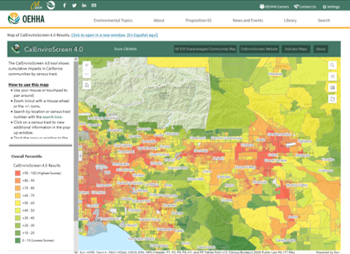
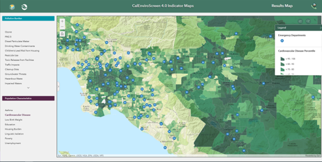
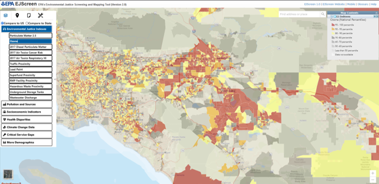
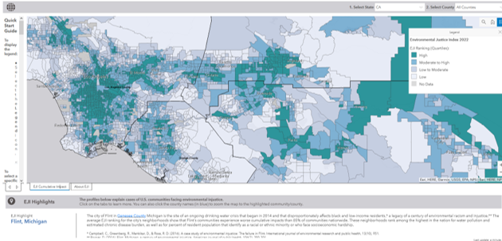
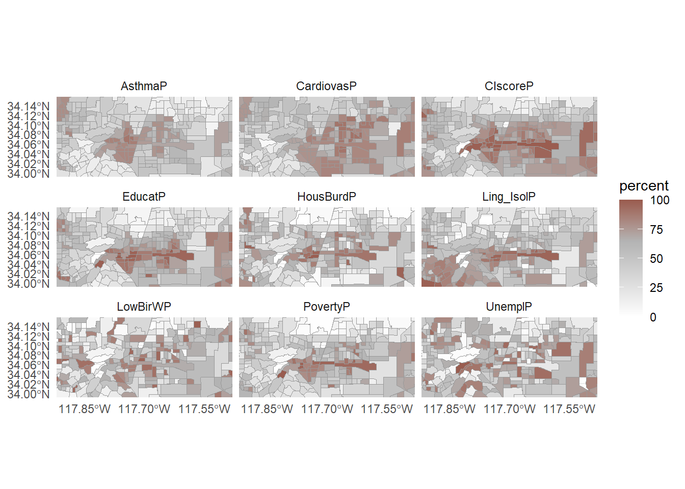

7 EJ - Overview
Today we will focus on the definition(s), theory, tools, and visualization of Environmental Justice
7.1 Definitions
Environmental Protection Agency and California EPA - The fair treatment and meaningful involvement of all people regardless of race, color, culture, national origin, income, and educational levels with respect to the development, implementation, and enforcement of protective environmental laws, regulations, and policies. Fair treatment means that no population, due to policy or economic disempowerment, is forced to bear a disproportionate burden of the negative human health or environmental impacts of pollution or other environmental consequences resulting from industrial, municipal, and commercial operations or the execution of federal, state, local, and tribal programs and policies
Schlosberg et al., 2002 - - The equitable distribution of environmental risks and benefits
The difference between Environmentalism and Environmental Justice is that Environmental Justice brings forward the underlying issues of race, ethnicity, class, wealth, and/or sovereignty in environmental decision-making.
7.1.1 Discussion 1
- Is there anything missing from these definitions of Environmental Justice?
- How does the EPA’s focus on the negative impacts frame Environmental Justice?
- Is a focus on equitable distribution possible in the United States, California, or local municipalities?
7.2 Concepts of Environmental Justice Movement
The Environmental Justice is a broad and diffuse global movement with many facets. We will not be able to cover most of these concepts in-depth due to time constraints and the visualization focus of this course.
I did want to do an overview of these topics such that we can compare them to the current tools used in the U.S. and California for measuringing and quantifying Environmental Justice.
- Environmental Racism - racial discrimination in environmental policy making, enforcement, and decision-making. This applies both within the United States and globally (e.g., hazardous waste export to southern hemisphere).
- Ecological debt - the accumulation of obligations through inequitable resource exploitation, pollution, and habitat degradation between the Northern and Southern hemisphere. This has been quantified through climate debt which examines emissions differentials in carbon budgets and adaptation costs which will accrue primarily to poorer countries.
- Climate justice - equitable distribution of benefits and burdens of climate change adaptation and costs.
-
Food sovereignty - a food system in which the people who produce, distribute, and consume food also control the mechanisms and policies of food production and distribution; this stands in contrast to a corporate food regime in which corporations and market insitutions control the food system.
- Sacrifice Zones - a geographic area permanently impaired by heavy environmental alterations or economic disinvestment, often through locally unwanted land use (LULU).
- Environmentalism of the poor - social movement that emphasizes social justice issues instead of emphasizing conservation and eco-efficiency; focuses on sustainability and sovereignty.
7.3 Environmental Justice Tools
We are going to be talking about three EJ tools in this course.
For today, I want to focus on the intersection of the concepts of environmental justice listed above and the metrics of environmental justice in these tools.
7.3.1 CalEnviroScreen

Figure 7.1 shows the CalEnviroScreen tool pollution burden index for SoCal. The CalEnviroScreen tool is made up of two categories of data indicators, as documented in the 207 page CalEnviroScreen4.0 report.
- Pollution Burden - negative environmental indicators of either pollution exposure or environmental effects (e.g., ozone, PM, traffic, drinking water contaminants, toxic release facilities)
- Population Characteristics - health and socio-economic indicators (e.g., asthma, education, unemployment, low birth weight) - economic, educational, and linguistic indicators are included.
The Pollution Burden score and Population Characteristics score are multiplied to determine the final CalEnviroScreen Score.
CalEnviroScreen4.0 does not have race/ethnicity explicitly as an explanatory variable or part of the base indicator. A six-page supplementary analysis and brief storymap give a cursory description of the EJ results.
Individual indicators can be explored as shown in Figure 7.2 visualization of SoCal cardiovascular disease percentiles.

7.3.2 EPA’s EJScreen

Figure 7.3 shows the EPA’s EJScreen index for ozone in SoCal. The U.S. Environmental Protection Agency’s EJScreen tool is also made up of two categories of data indicators, as documented in the 115-page technical report. EPA documentation states that EJScreen is a ’pre-decisional screening tool, and was not meant to be the basis for agency decision-making or determinations regarding the existence or absence of EJ concerns. It should also not be used to identify or label an area as an “EJ community.”
- Environmental Indicators - negative environmental indicators (i.e., air pollution, traffic, lead paint, proximity to hazardous waste sites, and wastewater discharge)
- Demographic Indicators - an average of the percentage of minority (i.e., non-white non-hispanic) and percentage of low-income households (2x poverty level).
The individual environmental indicators are combined with a demographic index value to provide individual EJ index values by environmental issue. Thus, there are 12 separate EJ indices provided in EJScreen.
7.3.3 CDC and ATSDR Environmental Justice Index

Figure 7.4 shows the Environmental Justice Index quartiles for SoCal. The Centers for Disease Control CDC Agency for Toxic Substances and Disease Registry ATSDR is a public health agency that has created its own indicator, which is documented in a 94 page technical report
The EJI uses three broad categories of indicators.
- Social Vulnerability - Subgroups in this category include racial/ethnic minority status, socioeconomic categories, household demographics, and housing type
- Environmental Burden - Subgroups in this category include air pollution, hazardous and toxic sites, built environment, transportation corridors, and water pollution
- Health Vulnerablity - This category includes five pre-existing chronic diseases, including asthma, cancer, blood pressure, diabetes, and mental health.
The three indicator categories are each weighted equally and averaged to generate a final single indicator value for the EJI. Each individual category is also available via mouseover or click on specific map locations.
7.3.4 Discussion 2
- Visualization - What are your first thoughts about the visualization choices made by creators of these EJ tools? What do you like and dislike; what would you change?
- Indicators - Compare the sets of indicators in these tools. Are they measuring Environmental Justice? What EJ concepts are not covered by these indicators?
- Groupthink - Gather round in groups of 4 and pick a data layer to explore and compare in each of these tools. Once your group has decided, that layer cannot be picked by another group. Come up with a brief group story about your EJ data layer. In your story, tell the class which tool is best and why for illustrating your story. Similarly, tell the class which tool is worst and why for illustrating your story.
7.3.5 Bonus Coding Example - Small Multiples
Tufte describes small multiples as an effective way to communicate differences in datasets. We did small multiple figures with the mpg dataset in our first day of class coding. I will show how to do the same thing for a spatial dataset below.
The data manipulation in this example is relatively advanced database work. It is shown here only for completeness and reproducibility; advanced data manipulation is not a learning objective for this course.
First, load libraries, then import the dataset.
URL.path <- 'https://raw.githubusercontent.com/RadicalResearchLLC/EDVcourse/main/CalEJ4/CalEJ.geoJSON'
SoCalEJ <- st_read(URL.path) %>%
st_transform("+proj=longlat +ellps=WGS84 +datum=WGS84")Reading layer `CalEJ' from data source
`https://raw.githubusercontent.com/RadicalResearchLLC/EDVcourse/main/CalEJ4/CalEJ.geoJSON'
using driver `GeoJSON'
Simple feature collection with 3747 features and 66 fields
Geometry type: POLYGON
Dimension: XY
Bounding box: xmin: 97418.38 ymin: -577885.1 xmax: 539719.6 ymax: -236300
Projected CRS: NAD83 / California AlbersThis code will tidy the dataset using the select() and pivot_longer() functions to select the socioeconomic indicators used in the CalEnviroScreen dataset.
# select socioeconomic indicators and make them narrow - only include counties above 70%
SoCal_SocioEc <- SoCalEJ %>%
select(Tract, TotPop19, CIscoreP, AsthmaP, LowBirWP, CardiovasP, EducatP, HousBurdP, Ling_IsolP, PovertyP, UnemplP, geometry) %>%
pivot_longer(cols = c(3:11), names_to = 'indicator', values_to = 'percent') %>%
filter(percent >=0)Make a facet plot to show many indicator maps centered around Pitzer College as shown in Figure 7.5.
ggplot(data = SoCal_SocioEc, aes(fill = percent)) +
geom_sf(color = 'gray60', size = 0) +
theme_minimal() +
facet_wrap(~indicator, nrow = 3) +
#scale_fill_viridis_c(option = 'F', direction = -1, alpha = 0.8) +
scale_fill_gradient2(low = 'white', mid = 'grey70', high = '#720000', midpoint = 65) +
scale_x_continuous(limits = c(-117.9, -117.5), breaks = c(-117.85, -117.7, -117.55)) +
scale_y_continuous(limits = c(34.0, 34.15))